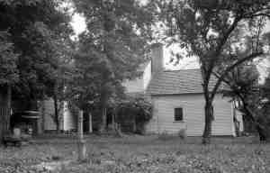

|
|
| 
Greenup Dunlap BLANTON (1814-1894) |
Greenup Dunlap BLANTON 173,3602
General Notes: Greenup Blanton appears on the slave schedule of the 1860 census with 7 slaves. Noted events in his life were: • Census, 4 Sep 1850, , Estill Co., Kentucky, USA. 3605 • Occupation: farmer, 4 Sep 1850, , Estill Co., Kentucky, USA. 3605 • Census: Slave Schedule, 24 Aug 1850, , Estill Co., Kentucky, USA. 3606 • Census, 14 Jun 1860, Elliston, Madison Co., Kentucky, USA. 3599 • Occupation: farmer, 14 Jun 1860, Elliston, Madison Co., Kentucky, USA. 3599 • Census: Slave Schedule, 18 Jun 1860, , Madison Co., Kentucky, USA. 3603 • Census, 10 Jun 1880, Elliston, Madison Co., Kentucky, USA. 3601 Greenup married Margaret Elizabeth DOUTHITT, daughter of Hiram DOUTHITT and Frances Prue JAMESON, on 13 May 1843 in , Madison Co., Kentucky, USA.3578 (Margaret Elizabeth DOUTHITT was born about 1824 in , , Kentucky, USA,3490,3599 died on 7 Apr 1894 3379 and was buried in Blanton-Douthitt Cmty, College Hill, Madison Co., Kentucky, USA 3499.) |
Search using Google Custom Search:
Table of Contents | Surnames | Name List
This website was created 2 Mar 2025 with Legacy 10.0, a division of MyHeritage.com; content copyrighted and maintained by coddgenealogy at gmail d0t com